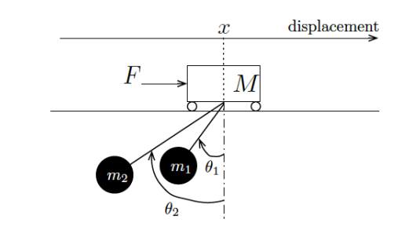
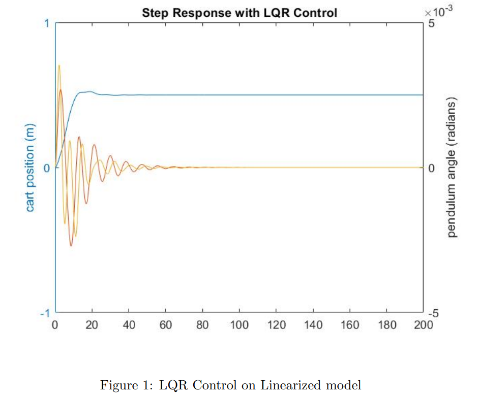
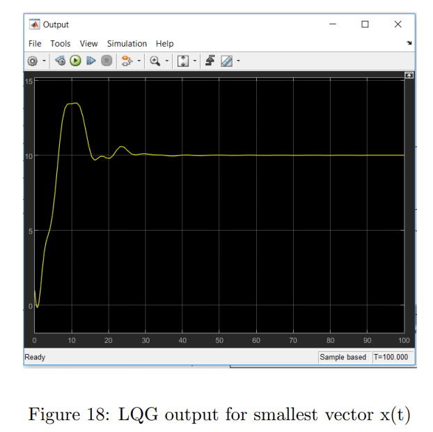

Link to the code: Click here Link to the Report: Click here
Problem Statement:→ Consider a crane that moves along an one-dimensional track. It behaves as a friction-less cart with mass M actuated by an external force F that constitutes the input of the system. There are two loads suspended from cables attached to the crane. The loads have mass m1 and m2, and the lengths of the cables are l1 and l2, respectively. The following figure depicts the crane and associated variables used throughout this project.
Design Procedure: The following steps were followed: → Obtain the equations of motion for the system and the corresponding nonlinear state-space representation. → Obtain the linearized system around the equilibrium point specified by $ x = 0 $ and $ \theta_{1} = \theta_{2} = 0 $. Write the state-space representation of the linearized system. → Obtain conditions on $ M $, $ m_{1} $, $ m_{2} $, $ l_{1} $, $ l_{2} $ for which the linearized system is controllable. → Choose $ M = $ 1000Kg, $ m_{1} = m_{2} = $ 100Kg, $ l_{1} $ = 20m and $ l_{2} $ = 10m. Check that the system is controllable and obtain an LQR controller. Simulate the resulting response to initial conditions when the controller is applied to the linearized system and also to the original nonlinear system. Adjust the parameters of the LQR cost until you obtain a suitable response. Use Lyapunov’s indirect method to certify stability (locally or globally) of the closed-loop system. → Suppose that you can select the following output vectors: x(t), (θ1(t), θ2(t)), (x(t), θ2(t)) or(x(t), θ1(t), θ2(t)). Determine for which output vectors the linearized system is observable.
→ Obtain your "best" Luenberger observer for each one of the output vectors for which the system is observable and simulate its response to initial conditions and unit step input. The simulation should be done for the observer applied to both the linearized system and the original nonlinear system. → Design an output feedback controller for your choice of the "smallest" output vector. Use the LQG method and apply the resulting output feedback controller to the original nonlinear system.  Pruthvi Sanghavi, No Rights Reserved 😉